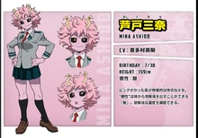

Мина Ашидо
Кьёка Джиро
- Пол: ♀ Женский
- Рост: 159 см.
- Возраст: 16
- Группа крови: AB
- Родился в: Японии
Мина Ашидо — студентка Юэй, обучающаяся на профессиональную героиню.
Внешность
Кожа Мины имеет розовый цвет из-за ее кислотной причуды. Склеры у глаз Мины черные, а зрачки жёлтые. У нее непослушные розовые короткие волосы с желтыми рогами. Геройский костюм состоит из камуфляжного костюма фиолетово-бирюзовых оттенков, пиджака с белым мехом на воротнике и сапог, выполненных на заказ, позволяющих выделять кислоту из ног для скольжения. Также носит белую маску.

Личность
Мина Ашидо — очень веселая девушка с вечной улыбкой на лице. Также она легко возбудима и эмоциональна, что заметно по ее реакции на любое происходящее явление. Может радоваться как настоящий ребенок предстоящей поездке, а также активно комментировать действия людей во время наблюдения за их битвами. У Мины очень необычная внешность, начиная с рожек на голове, которые сильно мешают во время водных процедур, и заканчивая черными белками глаз и розовой кожей, ставшей такой из-за особенностей ее причуды. Чаще всего носит футболки с надписью «Pinky» — ее геройский псевдоним, который она выбрала на уроке героини Полночи.
Причуда
 Кислота: причуда Мины заключается в выделении кислоты из тела. Она может выделять ее из всех частей тела без вреда самой себе (одежда же невредимой не остается...). Ашидо довольно умело пользуется своей причудой, спектр применений довольно велик. Использует кислоту для скольжения на плоских поверхностях, для вскарабкивания на отвесные поверхности (кислотой разъедает материал создавая отверстия для подъема) и для банального разъедания предметов. Также, Мина может контролировать вязкость и растворимость кислоты. Кислота достаточно едкая, чтобы мгновенно разъесть металл или бетон.
Кислота: причуда Мины заключается в выделении кислоты из тела. Она может выделять ее из всех частей тела без вреда самой себе (одежда же невредимой не остается...). Ашидо довольно умело пользуется своей причудой, спектр применений довольно велик. Использует кислоту для скольжения на плоских поверхностях, для вскарабкивания на отвесные поверхности (кислотой разъедает материал создавая отверстия для подъема) и для банального разъедания предметов. Также, Мина может контролировать вязкость и растворимость кислоты. Кислота достаточно едкая, чтобы мгновенно разъесть металл или бетон.